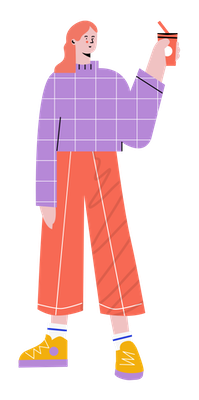

Designer & Travelholic
I'm Vera Li :)
I am an HCI track student at the University of Michigan. During my undergraduate, I majored in communication in mainland China and spent one semester in Hongkong learning data and media concentration. I am really passionate about listening to people's experiences and also telling stories visually. I am also very interested in data journalism and information visualization. I hope I utilize my communication background to design a better experience for people.
I love Milk-tea 🥤 K-POP 🎤 Cooking 🍳 Violin 🎻 theme park 🎡

Free to say hi!
would add a form here....